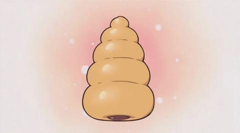

Go back to main site
Chocolate Cornets
Ingredients:
- Horn/Cornet molds, or tinfoil or wax paper to make your own
- 1 ½ cups all-purpose flour
- 1 ½ cups half and half
- 1 tbsp. milk powder
- some water, slightly warmed (only if needed)
- 1 egg
- 1 ½ tbsp. sugar
- 1 tbsp. oil
- 2 tbsp. melted butter
- 1 tsp. instant yeast
- ½ tsp. salt
- 8 ounces semisweet chocolate chips
- 1 tbsp. unsalted butter, at room temperature